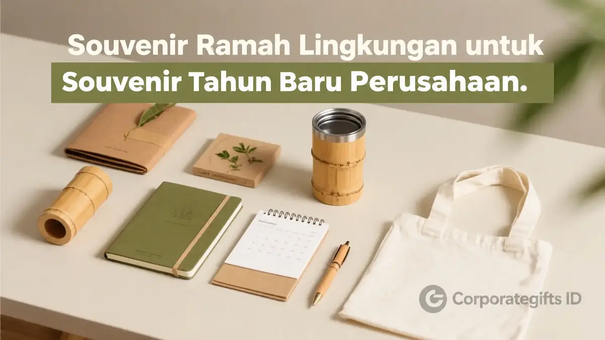

Corporate Gifts ID - Souvenir ramah lingkungan adalah cinderamata perusahaan yang diproduksi menggunakan bahan alami, material daur ulang, atau dirancang untuk pemakaian berulang (reusable) jangka panjang, seperti tote bag kanvas organik, tumbler stainless steel, dan set alat makan kayu bambu. Produk ini dipilih oleh berbagai korporasi progresif untuk menyelaraskan program Corporate Social Responsibility (CSR) dan pilar Environmental, Social, and Governance (ESG) sekaligus memperkuat citra brand yang beretika tinggi pada perayaan tahun baru.
Permintaan terhadap merchandise perusahaan bertema eco-friendly terus melonjak pesat. Generasi profesional masa kini kian selektif dan lebih menghargai korporasi yang menunjukkan aksi nyata dalam mereduksi jejak karbon dan sampah plastik sekali pakai.
Menghadirkan cinderamata berkelanjutan pada perayaan tahun baru bukan sekadar pemberian hadiah simbolis, melainkan komitmen jangka panjang dalam membangun relasi kemitraan yang bertanggung jawab.
Poin Kunci Memilih Souvenir Eco-Friendly Tahun Baru:
- Penguatan Reputasi ESG: Mempertegas kepatuhan perusahaan terhadap standar keberlanjutan global yang menjadi perhatian utama investor dan mitra bisnis.
- Pengurangan Limbah Plastik: Mengganti barang promosi konvensional dengan material alami (bambu, katun organik, stainless steel SUS 304).
- Daya Guna Jangka Panjang: Produk berdaya pakai harian tinggi memastikan paparan logo brand berlangsung secara berkelanjutan.
- Kemasan Zero-Waste: Menggunakan kardus kraft daur ulang atau pembungkus kain furoshiki tanpa lapisan plastik sintetis.
Mengapa Souvenir Ramah Lingkungan Jadi Prioritas Perusahaan Modern
Isu perubahan iklim dan keberlanjutan lingkungan hidup telah bertransformasi menjadi salah satu indikator utama penilaian reputasi bisnis. Klien korporat, mitra perbankan, dan talenta muda profesional kini cenderung membangun loyalitas bersama entitas yang memiliki visi hijau jelas.
Memberikan cinderamata ramah lingkungan menghadirkan tiga keuntungan strategis bagi instansi Anda:
- Meningkatkan reputasi dan brand trust di hadapan publik dan pemangku kepentingan (stakeholders).
- Mendukung pencapaian target laporan keberlanjutan tahunan (Sustainability Report & ESG Rating).
- Meningkatkan employee pride dan sense of purpose bagi seluruh anggota tim kerja internal.
9 Inspirasi Souvenir Ramah Lingkungan untuk Tahun Baru
Berikut sembilan ide produk cinderamata ramah lingkungan yang memadukan fungsionalitas harian dan estetika modern untuk menyambut lembaran tahun baru:

Kombinasi hadiah kantor berkelanjutan: cutlery set bambu, tumbler vakum kayu, sabun artisan alami, dan lilin soy wax.
1. Tas Serut & Drawstring Bag Daur Ulang
Tas serut berbahan blacu katun atau serat kain daur ulang adalah pilihan praktis untuk aktivitas gym, seminar, maupun berbelanja harian. Desainnya yang simpel sangat ideal disematkan grafis logo minimalis.
2. Sabun Handmade Alami dengan Kemasan Kraft
Sabun batang artisan berbahan minyak zaitun murni, kelapa, dan ekstrak essential oil menghadirkan kesan perawatan diri (self-care) yang eksklusif. Kemasan boks kertas kraft daur ulang menegaskan nuansa natural.
3. Tumbler Stainless Reusable Food-Grade
Tumbler vacuum insulated berbahan stainless steel SUS 304 tahan karat membantu mengurangi konsumsi botol plastik sekali pakai. Menjaga suhu minuman tetap dingin hingga 12 jam atau panas hingga 8 jam.
4. Set Alat Makan Bambu Alami (Cutlery Set)
Perlengkapan makan portabel yang terdiri dari sendok, garpu, dan sumpit bambu dalam pouch kanvas sangat higienis untuk dibawa karyawan saat makan siang di kantor maupun perjalanan dinas.
5. Tanaman Hias Mini Meja Kerja
Tanaman sukulen mini atau bibit pohon dalam pot tanah liat terracotta melambangkan pertumbuhan berkelanjutan menyongsong tahun yang baru sekaligus menyegarkan suasana meja kerja.
6. Notebook Agenda dari Kertas Daur Ulang
Buku catatan bersampul hard cover daur ulang dengan kertas bebas klorin (acid-free recycled paper) sangat cocok untuk mencatat resolusi dan rencana kerja strategis awal tahun.
7. Sedotan Stainless Steel & Silikon Reusable
Satu set sedotan ramah lingkungan dilengkapi sikat pembersih mini dalam tabung travel gandum (wheat straw) adalah simbol nyata gaya hidup ramah lingkungan yang sangat terjangkau.
8. Totebag Kanvas Katun Organik
Tote bag kanvas tebal dengan jahitan ganda mampu menampung laptop dan berkas kerja, menjadi media promosi brand bergerak di ruang publik.
9. Lilin Aromaterapi Alami Soy Wax
Lilin berbahan dasar lilin kedelai murni (soy wax) tanpa paraffin sintetis menghasilkan pembakaran bersih tanpa asap beracun, menyebarkan keharuman menenangkan di ruang kerja rumah.
Tabel Matriks Kategori Produk Eco-Friendly, Material, dan Estimasi Biaya
Berikut matriks referensi produk ramah lingkungan untuk mempermudah penyusunan Rencana Anggaran Biaya (RAB) tahun baru institusi Anda:
| Kategori Hadiah | Komposisi Material | Karakteristik Keberlanjutan | Estimasi Biaya Satuan | Target Penerima |
|---|---|---|---|---|
| Eco Stationery Set | Recycled Kraft Notebook + Bamboo Pen + Pouch Goni | 100% Biodegradable & Kertas Daur Ulang Bebas Klorin | Rp65.000 - Rp115.000 | Seluruh Karyawan, Peserta Kickoff |
| Zero-Waste Daily Kit | Tumbler Stainless SUS 304 + Cutlery Bambu + Tote Katun | Pengurangan Sampah Plastik Sekali Pakai | Rp145.000 - Rp245.000 | Manajemen Menengah, Rekanan Kerja |
| Green Wellness Hampers | Soy Wax Candle + Artisan Organic Tea + Sabun Herbal | Bahan Alami Non-Toksik & Kemasan Box Kraft | Rp225.000 - Rp350.000 | Klien VIP, Mitra Strategis Bisnis |
| Executive Eco-Tech | Bamboo Wireless Charger + Smart LED Tumbler Kayu | Kombinasi Gadget Fungsional & Casing Kayu Alami | Rp295.000 - Rp475.000 | Direksi, Key Stakeholders Korporat |
Panduan Memilih Souvenir Ramah Lingkungan yang Efektif
Agar cinderamata tahun baru benar-benar memberikan dampak positif dan tidak berakhir sebagai sampah, terapkan 4 prinsip pengadaan berikut:
- Prioritaskan Fungsionalitas Nyata: Pilih item yang terbukti dipakai rutin dalam rutinitas kerja harian sehingga pesan brand terus diingat.
- Gunakan Vendor dengan Produksi Etis: Pilih produsen yang memiliki transparansi bahan baku, meminimalisir limbah produksi, dan mendukung pengrajin lokal.
- Terapkan Zero-Plastic Packaging: Gunakan boks karton kraft bergelombang (corrugated box) dengan pita tali rami atau kemasan kain ramah lingkungan.
- Sematkan Kartu Nilai Edukasi: Cantumkan kartu ucapan berbahan seed paper (kertas benih yang bisa ditanam) berisikan pesan inspiratif tentang kepedulian lingkungan.
Dampak Positif terhadap Reputasi ESG dan Strategi Promosi Hijau
Pemberian cinderamata ramah lingkungan dapat diintegrasikan dengan kampanye pemasaran tahunan institusi. Anda dapat menyematkan QR Code pada kemasan produk yang mengarahkan penerima ke halaman laporan tahunan CSR perusahaan, portofolio proyek sosial, maupun inisiatif penanaman pohon yang telah dilakukan.
Langkah ini secara elegan mendemonstrasikan transparansi dan akuntabilitas brand dalam berkontribusi nyata menjaga kelestarian bumi.
Pertanyaan Seputar Souvenir Ramah Lingkungan (FAQ)
Kesimpulan dan Konsultasi Souvenir Tahun Baru Ramah Lingkungan
Memilih souvenir ramah lingkungan untuk momentum tahun baru adalah investasi reputasi jangka panjang yang menegaskan dedikasi perusahaan terhadap masa depan bumi dan masyarakat. Setiap produk yang fungsional dan estetik akan menjadi pengingat harian akan nilai-nilai positif brand Anda.
Temukan ratusan inspirasi produk keberlanjutan di e-katalog resmi kami atau hubungi tim konsultan di Corporate Gifts ID untuk merancang paket cinderamata ramah lingkungan kustom sesuai anggaran perusahaan Anda.